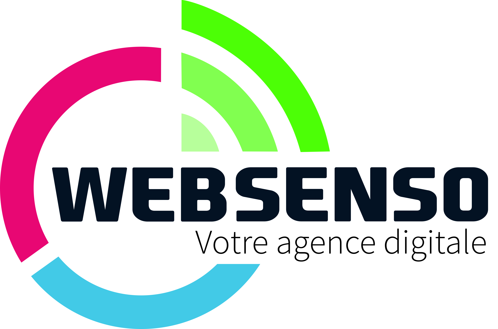

<!DOCTYPE html>
<html lang="en">
	<head>
		<meta charset="UTF-8">
		<meta name="viewport" content="width=device-width, initial-scale=1.0">
		<title>Aurélie Magne</title>
		<link href="https://fonts.googleapis.com/icon?family=Material+Icons" rel="stylesheet">
		<link rel="stylesheet" href="css/materialize.min.css">
		<link rel="stylesheet" href="icofont/icofont.min.css"/>
		<link rel="stylesheet" href="css/style.css">
	</head>

	<body class="blue-grey lighten-5">

		<aside id="sidebar" class="fond">
			<div class="profile">
				<div class="user on">
					<p class="white-text center name">Aurélie MAGNE</p>
					<div class="coordonnee">
						<p class="email">
							<i class="icofont-email"></i>
							aurelie.magne05@hotmail.com
						</p>
						<p class="âge">
							<i class="icofont-calendar"></i>
							22 ans
						</p>
						<p class="nationalité">
							<i class="icofont-flag"></i>
							Française
						</p>
						<p class="permis">
							<i class="icofont-id-card"></i>
							Permis B
						</p>
						<p class="téléphone">
							<i class="icofont-phone"></i>
							06 21 06 05 53
						</p>
						<p class="twitter">
							<i class="icofont-twitter"></i>
							@aurelie_mgn
						</p>
						<p>
							<i class="icofont-eye"></i>
							<a class="lienCV" href="cv.html" target="_blank">Voir mon cv</a>
						</p>
					</div>
					<div class="social-links center">
						<a href="" class="linkedin"></a>
					</div>
				</div>
			</div>

			<ul id="menu" class="center">
				<li class="active">
					<a href="#monParcours" class="waves-effect waves-light btn">
						Mon parcours
					</a>
				</li>
				<li>
					<a href="#management" class="waves-effect waves-light btn">
						Management
					</a>
				</li>
				<li>
					<a href="#marketing" class="waves-effect waves-light btn">
						Marketing d'influence / sponsoring
					</a>
				</li>
				<li>
					<a href="#gestion" class="waves-effect waves-light btn">
						Gestion de projet
					</a>
				</li>
			</ul>
		</body>
	</body>
</html></aside><main id="content">

<h1 class="center-align" hidden>Aurélie MAGNE</h1>

<section id="monParcours">
	<h2 class="center">Mon parcours</h2>
	<div id="frise" class="raw"></div>
	<div id="presentation" class="raw">
		<p class="flow-text">ici le texte que tu veux écrire</p>
		
	</div>
</section>

<section id="management">
	<h2 class="center">Management d'équipe</h2>
	<div class="model-type">
		<div class="experiences">
			<div class="col s12 m6">
				<div class="card">
					<div class="card-content">
						<span class="card-title center">Mes expériences</span>
						
						<h3 class="center">Management d'équipe esport</h3>
						<p class="center sous-titre">
							<em>(Depuis juillet 2019)</em>
						</p>
						<p>En juillet 2019, j'ai rejoint Oserv Esport avec la mission de gérer la section Fortnite, ce qui a commencé par le recrutement de 8 nouveaux joueurs. Depuis, je suits les joueurs au quotidien en étant le relai entre l'équipe et les différents pôles de la structure.
						</p>

						<h3 class="center">Projet : Constitution et management d'une équipe esport</h3>
						<p class="center sous-titre">
							<em>Supervisé par Jean Marc Gaudin
								<br/>
								(anciennement Millenium, aAa Gaming et MCES)</em>
						</p>
						<ul class="liste">
							<li>Evaluation des besoins (ressources humaines et matérielles)</li>
							<li>Mise en place d'une stratégie de développement</li>
							<li>Création d'un business model</li>
						</ul>
						<h3 class="center">Projet : Préparation mentale</h3>
						<p class="center sous-titre">
							<em>Supervisé par Frédérick Vergnas
								<br/>(Center Coachs, FV Conseil, GameWard..)</em>

						</p>
						<ul class="liste">
							<li>Identification des leviers de la performance</li>
							<li>Travail sur l'équilibre de vie, la place de l'hygiène de vie</li>
							<li>Intégrer la préparation mentale dans l'accompagnement à la performance</li>
						</ul>
					</div>

				</div>
			</div>
		</div>
		<div class="competences">
			<div class="col s12 m6">
				<div class="card">
					<div class="card-content">
						<span class="card-title center">Mes compétences</span>
						
						<p>Scouting (recrutement de joueurs et de staff encadrant)</p>
						
						<p>Suivi et encadrement des joueurs</p>
						
						<p>Mise en place de supports de travail</p>
						
						<p>Logistique des déplacements en lan</p>
						
						<p>Forte adaptabilité de la scène et veille du secteur</p>
					</div>
				</div>
			</div>
		</div>
	</div>
</section>
<section id="marketing">
	<h2 class="center">Marketing d'influence / sponsoring</h2>
	<div class="model-type">
		<div class="experiences">
			<div class="col s12 m6">
				<div class="card">
					<div class="card-content">
						<span class="card-title center">Mes expériences</span>
						<h3 class="center">Projet : Sponsoring Esport</h3>
						<p class="center sous-titre">
							<em>Supervisé par Thomas Gavache
								<br/>(Good Game Management)</em>
						</p>
						<p>Constitution d'une offre de partenariat pour l'entrée de BNP Paribas dans le secteur de l'esport</p>
						<ul class="liste">
							<li>Définition d'activations</li>
							<li>Stratégie de communication esport</li>
						</ul>
						<h3 class="center">Projet : Marketing d'influence</h3>
						<p class="center sous-titre">
							<em>Supervisé par Benjamin Hoffner
								<br/>(anciennement Fnatic)</em>
						</p>
						<p>Stratégie d'influence pour mettre en avant les produits SteelSeries :</p>
						<ul class="liste">
							<li>Compréhension de la marque, détection des enjeux</li>
							<li>Identification des influencers et analyse des données</li>
							<li>Constitution d'une stratégie sur le long terme (activations)</li>
						</ul>
					</div>
				</div>
			</div>
		</div>
		<div class="competences">
			<div class="col s12 m6">
				<div class="card">
					<div class="card-content">
						<span class="card-title center">Mes compétences</span>
						
						<p>Suivie del'actualité</p>
						
						<p>Compréhensiondesvaleursetattentesdel'entreprise</p>
						
						<p>Détectiond'influencers</p>
						
						<p>Constitutiond'unepropositiond'unensembled'activations</p>
						
						<p>Budgetisationdelacampagne</p>
						
						<p>Analysederésultatsetéétrospection</p>
					</div>
				</div>
			</div>
		</div>
	</div>
</section>
<section id="gestion">
	<h2 class="center">Gestion de projet</h2>
	<div class="model-type">
		<div class="experiences">
			<div class="col s12 m6">
				<div class="card">
					<div class="card-content">
						<span class="card-title center">Mes expériences</span>
						
						<h3 class="center">Stage : Gestion de projet</h3>
						<p class="center sous-titre">
							<em>( 3 mois )</em>
						</p>
						<p>J'ai effectué un stage à Websenso, agence digitale de création de site web, où j'ai eu l'occasion de faire de nombreuses tâches :</p>
						<ul class="liste">
							<li>Mise en conformité de l'entrepriseau RGPD</li>
							<li>Gestion de planning pour divers projets</li>
							<li>Répondre à des appels d'offre</li>
							<li>Publication sur les réseaux sociaux et création d'articles pour alimenter le blog</li>
							<li>Suivi de plusieurs projes (zoning, correction de bugs, tests..)</li>
						</ul>
					</div>
				</div>
			</div>
		</div>
		<div class="competences">
			<div class="col s12 m6">
				<div class="card">
					<div class="card-content">
						<span class="card-title center">Mes compétences</span>
						
						<p>Priorisation des tâches</p>
						
						<p>Respect des échéances et organisation</p>
						
						<p>Gestion de planning</p>
						
						<p>Maîtrise du pack Office (PowerPoint, Excel ...)</p>
					</div>
				</div>
			</div>
		</div>
	</div>
</section></main><script type="text/javascript" src="js/materialize.min.js"></script><script src="https://code.jquery.com/jquery-3.5.1.min.js" integrity="sha256-9/aliU8dGd2tb6OSsuzixeV4y/faTqgFtohetphbbj0=" crossorigin="anonymous"></script><script type="text/javascript" src="js/script.js"></script></body></html>
